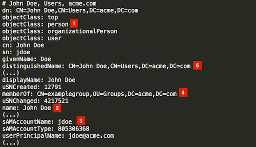

|
Ce document a été traduit à l'aide d'une technologie de traduction automatique. Bien que nous nous efforcions de fournir des traductions exactes, nous ne fournissons aucune garantie quant à l'exhaustivité, l'exactitude ou la fiabilité du contenu traduit. En cas de divergence, la version originale anglaise prévaut et fait foi. |
Configurer Active Directory (AD)
Si votre organisation utilise Microsoft Active Directory comme répertoire central des utilisateurs, vous pouvez configurer Rancher pour communiquer avec un serveur Active Directory afin d’authentifier les utilisateurs. Cela permet aux administrateurs de Rancher de contrôler l’accès aux clusters et aux projets en fonction des utilisateurs et des groupes gérés de manière externe dans l’Active Directory, tout en permettant aux utilisateurs finaux de s’authentifier avec leurs identifiants AD lors de la connexion à l’interface utilisateur de Rancher.
Rancher utilise LDAP pour communiquer avec le serveur Active Directory. Le flux d’authentification pour Active Directory est donc le même que pour l’intégration authentification OpenLDAP.
|
Avant de commencer, veuillez vous familiariser avec les concepts de Configuration d’authentification externe et utilisateurs principaux. |
Conditions préalables
Vous devrez créer ou obtenir de votre administrateur AD un nouvel utilisateur AD à utiliser comme compte de service pour Rancher. Cet utilisateur doit avoir des autorisations suffisantes pour effectuer des recherches LDAP et lire les attributs des utilisateurs et des groupes sous votre domaine AD.
En général, un compte Utilisateur de domaine (non administrateur) devrait être utilisé à cet effet, car par défaut, un tel utilisateur a des privilèges en lecture seule pour la plupart des objets dans la partition de domaine.
Notez cependant que dans certaines configurations d’Active Directory très sécurisées, ce comportement par défaut peut ne pas s’appliquer. Dans ce cas, vous devrez vous assurer que l’utilisateur du compte de service dispose d’au moins les autorisations Lecture et Liste du contenu accordées soit sur l’OU de base (enfermant les utilisateurs et les groupes), soit globalement pour le domaine.
|
Utilisez-vous TLS ?
|
Étapes de configuration
Ouvrir la configuration d’Active Directory
-
Connectez-vous à l’interface utilisateur de Rancher en utilisant le compte local initial
admin. -
Dans le coin supérieur gauche, cliquez sur ☰ > Utilisateurs et authentification.
-
Dans le menu de navigation à gauche, cliquez sur Fournisseur d’authentification.
-
Cliquez sur ActiveDirectory. Le Fournisseur d’authentification : Le formulaire ActiveDirectory s’affichera.
-
Remplissez le formulaire. Pour obtenir de l’aide, consultez les détails sur les options de configuration ci-dessous.
-
Cliquez sur Activer.
Configurer les paramètres du serveur Active Directory
Dans la section intitulée 1. Configure an Active Directory server, complétez les champs avec les informations spécifiques à votre serveur Active Directory. Veuillez vous référer au tableau suivant pour des informations détaillées sur les valeurs requises pour chaque paramètre.
|
Si vous n’êtes pas sûr des valeurs correctes à entrer dans le champ de base de recherche utilisateur/groupe, veuillez vous référer à Identifier la base de recherche et le schéma à l’aide de ldapsearch. |
Tableau 1 : Paramètres du serveur AD
| Paramètre | Description |
|---|---|
Nom d’hôte |
Indiquez le nom d’hôte ou l’adresse IP du serveur AD |
Port |
Indiquez le port sur lequel le serveur Active Directory écoute les connexions. LDAP non chiffré utilise normalement le port standard 389, tandis que LDAPS utilise le port 636. |
TLS |
Cochez cette case pour activer LDAP sur SSL/TLS (communément appelé LDAPS). |
Délai de connexion au serveur |
La durée en secondes que Rancher attend avant de considérer le serveur AD comme inaccessible. |
Nom d’utilisateur du compte de service |
Entrez le nom d’utilisateur d’un compte AD avec un accès en lecture seule à votre partition de domaine (voir Prérequis). Le nom d’utilisateur peut être saisi au format NetBIOS (par exemple. "DOMAINE\compte_service") ou au format UPN (par exemple, "serviceaccount@domain.com"). |
Mot de passe du compte de service |
Mot de passe du compte de service. |
Domaine de connexion par défaut |
Lorsque vous configurez ce champ avec le nom NetBIOS de votre domaine AD, les noms d’utilisateur saisis sans domaine (par exemple, "jdoe") seront automatiquement convertis en une connexion NetBIOS avec barre oblique (par exemple. "DOMAINE_DE_CONNEXION\jdoe") lors de la liaison au serveur AD. Si vos utilisateurs s’authentifient avec l’UPN (par exemple, "jdoe@acme.com") comme nom d’utilisateur, ce champ doit rester vide. |
Base de recherche utilisateur |
Le nom distinctif du nœud dans votre arbre de répertoire à partir duquel commencer à rechercher des objets utilisateur. Tous les utilisateurs doivent être des descendants de ce DN de base. Par exemple : "ou=people,dc=acme,dc=com". |
Base de recherche de groupe |
Si vos groupes se trouvent sous un nœud différent de celui configuré sous |
Configurer le schéma utilisateur/groupe
Dans la section intitulée 2. Customize Schema, vous devez fournir à Rancher un mappage correct des attributs utilisateur et groupe correspondant au schéma utilisé dans votre répertoire.
Rancher utilise des requêtes LDAP pour rechercher et récupérer des informations sur les utilisateurs et les groupes au sein de l’Active Directory. Les mappages d’attributs configurés dans cette section sont utilisés pour construire des filtres de recherche et résoudre l’appartenance aux groupes. Il est donc primordial que les paramètres fournis reflètent la réalité de votre domaine AD.
|
Si vous n’êtes pas familier avec le schéma utilisé dans votre domaine Active Directory, veuillez vous référer à Identifier la base de recherche et le schéma à l’aide de ldapsearch pour déterminer les valeurs de configuration correctes. |
Schéma d’utilisateur
Le tableau ci-dessous détaille les paramètres de configuration de la section schéma utilisateur.
Tableau 2 : Paramètres de configuration du schéma utilisateur
| Paramètre | Description |
|---|---|
Classe d’objet |
Le nom de la classe d’objet utilisée pour les objets utilisateur dans votre domaine. Si défini, spécifiez uniquement le nom de la classe d’objet - ne l’incluez pas dans un wrapper LDAP tel que &(objectClass=xxxx) |
Attribut du nom d’utilisateur |
L’attribut utilisateur dont la valeur est appropriée comme nom d’affichage. |
Attribut de connexion |
L’attribut dont la valeur correspond à la partie nom d’utilisateur des identifiants saisis par vos utilisateurs lors de la connexion à Rancher. Si vos utilisateurs s’authentifient avec leur UPN (par exemple, "jdoe@acme.com") comme nom d’utilisateur, ce champ doit normalement être défini sur |
Attribut des membres utilisateurs |
L’attribut contenant les groupes dont un utilisateur est membre. |
Attribut de recherche |
Lorsqu’un utilisateur saisit du texte pour ajouter des utilisateurs ou des groupes dans l’interface utilisateur, Rancher interroge le serveur AD et tente de faire correspondre les utilisateurs par les attributs fournis dans ce paramètre. Plusieurs attributs peuvent être spécifiés en les séparant par le symbole pipe ("|"). Pour faire correspondre les noms d’utilisateur UPN (par exemple, jdoe@acme.com), vous devez généralement définir la valeur de ce champ sur |
Filtre de recherche |
Ce filtre est appliqué à la liste des utilisateurs qui est recherchée lorsque Rancher tente d’ajouter des utilisateurs à une liste d’accès au site ou essaie d’ajouter des membres à des clusters ou des projets. Par exemple, un filtre de recherche d’utilisateur pourrait être |
Attribut utilisateur activé |
L’attribut contenant une valeur entière représentant une énumération par bits des indicateurs de compte utilisateur. Rancher utilise cela pour déterminer si un compte utilisateur est désactivé. Vous devez normalement laisser cela défini sur la norme AD |
Masque de bits d’état désactivé |
C’est la valeur de |
Schéma de groupe
Le tableau ci-dessous détaille les paramètres de configuration du schéma de groupe.
Tableau 3 : Paramètres de configuration du schéma de groupe
| Paramètre | Description |
|---|---|
Classe d’objet |
Le nom de la classe d’objet utilisée pour les objets de groupe dans votre domaine. Si défini, spécifiez uniquement le nom de la classe d’objet - ne l’incluez pas dans un wrapper LDAP tel que &(objectClass=xxxx) |
Attribut de nom : |
L’attribut de groupe dont la valeur est appropriée pour un nom d’affichage. |
Attribut utilisateur membre du groupe : |
Le nom de l’attribut utilisateur dont le format correspond aux membres du groupe dans le |
Attribut de mappage des membres du groupe : |
Le nom de l’attribut de groupe contenant les membres d’un groupe. |
Attribut de recherche |
Attribut utilisé pour construire des filtres de recherche lors de l’ajout de groupes à des clusters ou des projets. Voir la description du schéma utilisateur |
Filtre de recherche |
Ce filtre est appliqué à la liste des groupes qui est recherchée lorsque Rancher tente d’ajouter des groupes à une liste d’accès au site ou essaie d’ajouter des groupes à des clusters ou des projets. Par exemple, un filtre de recherche de groupe pourrait être |
Attribut DN du groupe : |
Le nom de l’attribut de groupe dont le format correspond aux valeurs de l’attribut utilisateur décrivant les appartenances de l’utilisateur. Reportez-vous à la section |
Adhésion à un groupe imbriqué |
Ce paramètre définit si Rancher doit résoudre les appartenances aux groupes imbriqués. Utilisez uniquement si votre organisation utilise ces appartenances imbriquées (c’est-à-dire que vous avez des groupes contenant d’autres groupes comme membres). Nous conseillons d’éviter les groupes imbriqués lorsque cela est possible pour éviter d’éventuels problèmes de performance en cas de grande quantité d’adhésions imbriquées. |
Test de l’authentification
Une fois la configuration terminée, procédez à tester la connexion au serveur AD en utilisant votre compte administrateur AD. Si le test est réussi, l’authentification avec l’Active Directory configuré sera activée implicitement avec le compte que vous testez défini comme administrateur.
|
L’utilisateur AD correspondant aux identifiants saisis à cette étape sera associé au compte principal local et se verra attribuer des privilèges d’administrateur dans Rancher. Vous devez donc prendre une décision consciente sur le compte AD que vous utilisez pour effectuer cette étape. |
-
Entrez le nom d’utilisateur et le mot de passe pour le compte AD qui doit être associé au compte principal local.
-
Cliquez sur S’authentifier avec Active Directory pour finaliser la configuration.
Résultat :
-
L’authentification Active Directory a été activée.
-
Vous vous êtes connecté à Rancher en tant qu’administrateur en utilisant les identifiants AD fournis.
|
Vous pourrez toujours vous connecter en utilisant le compte et le mot de passe |
Annexe : Identifiez la base de recherche et le schéma en utilisant ldapsearch.
Pour configurer avec succès l’authentification AD, il est crucial de fournir la configuration correcte concernant la hiérarchie et le schéma de votre serveur AD.
L’outil ldapsearch vous permet d’interroger votre serveur AD pour en savoir plus sur le schéma utilisé pour les objets utilisateurs et groupes.
Pour les commandes d’exemple fournies ci-dessous, nous supposerons :
-
Le serveur Active Directory a un nom d’hôte de
ad.acme.com -
Le serveur écoute les connexions non chiffrées sur le port
389 -
Le domaine Active Directory est
acme -
Vous avez un compte AD valide avec le nom d’utilisateur
jdoeet le mot de passesecret
Identifiez la base de recherche
Tout d’abord, nous utiliserons ldapsearch pour identifier le Nom Distingué (DN) du ou des nœuds parents pour les utilisateurs et les groupes :
$ ldapsearch -x -D "acme\jdoe" -w "secret" -p 389 \ -h ad.acme.com -b "dc=acme,dc=com" -s sub "sAMAccountName=jdoe"
Cette commande effectue une recherche LDAP avec la base de recherche définie sur la racine du domaine (-b "dc=acme,dc=com") et un filtre ciblant le compte utilisateur (sAMAccountNam=jdoe), retournant les attributs pour cet utilisateur :

Puisque dans ce cas le DN de l’utilisateur est CN=John Doe,CN=Users,DC=acme,DC=com [5], nous devrions configurer la User Search Base avec le DN du nœud parent CN=Users,DC=acme,DC=com.
De même, en fonction du DN du groupe référencé dans l’attribut memberOf [4], la valeur correcte pour la Group Search Base serait le nœud parent de cette valeur, c’est-à-dire OU=Groups,DC=acme,DC=com.
Identifiez le schéma utilisateur
La sortie de la requête ci-dessus ldapsearch permet également de déterminer les valeurs correctes à utiliser dans la configuration du schéma utilisateur :
-
Object Class: person [1] -
Username Attribute: name [2] -
Login Attribute: sAMAccountName [3] -
User Member Attribute: memberOf [4]
|
Si les utilisateurs AD de notre organisation devaient s’authentifier avec leur UPN (par exemple jdoe@acme.com) au lieu du nom de connexion court, nous devrions alors définir le |
Nous allons également définir le paramètre |
« (Merging with previous segment; see sentence 23 correction) » De cette façon, les utilisateurs peuvent être ajoutés aux clusters/projets dans l’interface utilisateur Rancher soit en saisissant leur nom d’utilisateur, soit leur nom complet. |
Identifiez le schéma de groupe
Ensuite, nous allons interroger l’un des groupes associés à cet utilisateur, dans ce cas CN=examplegroup,OU=Groups,DC=acme,DC=com :
$ ldapsearch -x -D "acme\jdoe" -w "secret" -p 389 \ -h ad.acme.com -b "ou=groups,dc=acme,dc=com" \ -s sub "CN=examplegroup"
Cette commande nous informera sur les attributs utilisés pour les objets de groupe :

Encore une fois, cela nous permet de déterminer les valeurs correctes à entrer dans la configuration du schéma de groupe :
-
Object Class: group [1] -
Name Attribute: name [2] -
Group Member Mapping Attribute: member [3] -
Search Attribute: sAMAccountName [4]
En regardant la valeur de l’attribut member, nous pouvons voir qu’il contient le DN de l’utilisateur référencé. Cela correspond à l’attribut distinguishedName dans notre objet utilisateur. En conséquence, il faudra définir la valeur du paramètre Group Member User Attribute sur cet attribut.
De la même manière, nous pouvons observer que la valeur dans l’attribut memberOf de l’objet utilisateur correspond au distinguishedName [5] du groupe. Nous devons donc définir la valeur pour le paramètre Group DN Attribute sur cet attribut.
Annexe : Dépannage
Si vous rencontrez des problèmes lors du test de la connexion au serveur Active Directory, vérifiez d’abord les identifiants saisis pour le compte de service ainsi que la configuration de la base de recherche. Vous pouvez également consulter les journaux de Rancher pour aider à identifier la cause du problème. Les journaux de débogage peuvent contenir des informations plus détaillées sur l’erreur. Veuillez vous référer à Comment puis-je activer la journalisation de débogage dans cette documentation.